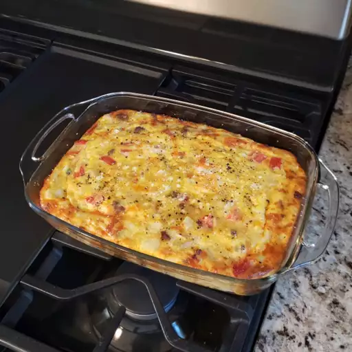

Cheesy Amish Breakfast Casserole Recipe

This Amish breakfast casserole has bacon, onion, eggs,
hash browns, and lots of cheese. My family loves this
hearty dish! Try breakfast sausage in place of bacon
if you prefer.
Ingredients
- Baconandonion:This Amish breakfast casserole starts with an onion sauteed with bacon.
- Eggs:You'll need nine (lightly beaten) eggs.
- Hash browns:Frozen hash brown potatoes are the convenient secret ingredients.
- Cheese:This recipe calls for Cheddar, Swiss, and small curd cottage cheeses.
Steps
- Cook the bacon and onion, drain, and transfer to a bowl.
- Stir in the eggs, Potatoes, and cheeses.
- Pour into a prepared baking dish and bake until the eggs are set
- Preheat the oven to 350 degrees F. Grease a 9x13-inch baking dish
- Bake in the preheated oven until eggs are set and cheese is melted, 45 to 50 minutes. Let stand 10 minutes before cutting and serving